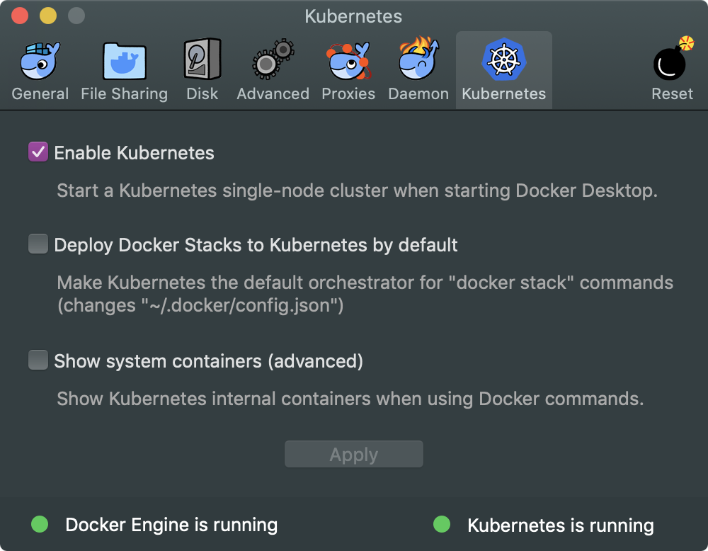

在k8s上运行pyspark程序
Table of Contents
前言
Apache Spark是高性能的分布式计算平台，提供Java，Scala，Python以及R的高阶API。 Kubernets是Google的容器管理、自动化部署以及扩容的平台工具，提供声明式的描述语法。 SQL语句就是典型的声明式语法，主要描述做什么，而非如何做。Spark2.3开始，开始支持 运行在原生Kubernets上。 本文主要描述如何在Mac OS上配置Docker上配置Kubernets，然 后介绍如何在K8S上运行PySpark程序。
要求
- Apache Spark(2.4)
- Docker Desktop(18.09.2)
- Kubernets(v1.10.11)
安装Docker Desktop
开启Kubernets
然后打开Docker的偏好设置，开启Kubernets。

安装Spark2.4
Spark On K8S的工作原理
[[ ][]]
][]]
这个是Spark官网给出的架构图，spark-submit可以直接提交spark应用到k8s集群上，提交 的工作机理如下：
- spark创建一个k8s pod来运行spark driver；
- driver继续创建运行在pod中的executors，然后连接上executor，开始执行程序；
- 当应用程序执行完成后，executor pod都被回收，driver开始执行持久化日志等，还依旧 处于"completed"状态，直到最终被垃圾回收或者手动清除；
下载Spark
cd ~/
wget https://www.apache.org/dyn/closer.lua/spark/spark-2.4.2/spark-2.4.2-bin-hadoop2.7.tgz
tar -xf spark-2.4.2-bin-hadoop2.7.tgz
mv spark-2.4.2-bin-hadoop2.7 spark
在K8S上运行Spark
构建镜像
./bin/docker-image-tool.sh -t spark-docker build
docker images | grep spark-docker spark-r spark-docker a0b4025aae73 6 days ago 739MB spark-py spark-docker 557b2ea25340 6 days ago 444MB spark spark-docker 4710effdb2de 6 days ago 353MB
配置kubernets service
Spark driever pod使用k8s的服务账号访问k8s api接口，完成executors的创建和监听pod， 使用如下命令创建serviceaccount以及授权Role或者ClusterRole；
kubectl create serviceaccount spark kubectl create clusterrolebinding spark-role --clusterrole=edit --serviceaccount=default:spark --namespace=default
提交spark(Java)
bin/spark-submit \ --master k8s://https://localhost:6443 \ --deploy-mode cluster \ --conf spark.executor.instances=1 \ --conf spark.kubernetes.authenticate.driver.serviceAccountName=spark \ --conf spark.kubernetes.container.image=spark:spark-docker \ --class org.apache.spark.examples.SparkPi \ --name spark-pi \ local:///opt/spark/examples/jars/spark-examples_2.11-2.4.1.jar
提交Spark(Python包)
在我的github仓库里面已经创建好了pyspark的python包，clone之后构建镜像，然后执行spark-submit;
mkdir ~/spark-example cd ~/spark-example git clone https://github.com/deyuhua/pyspark-on-k8s-example.git docker build -t pyspark-on-k8s . cd ~/spark ./bin/spark-submit \ --master k8s://https://localhost:6443 \ --deploy-mode cluster \ --name workflow-spark-k8s \ --conf spark.executor.instances=1 \ --conf spark.kubernetes.container.image=pyspark-on-k8s \ --conf spark.kubernetes.authenticate.driver.serviceAccountName=spark \ --conf spark.kubernetes.pyspark.pythonVersion=3 \ /usr/bin/run.py